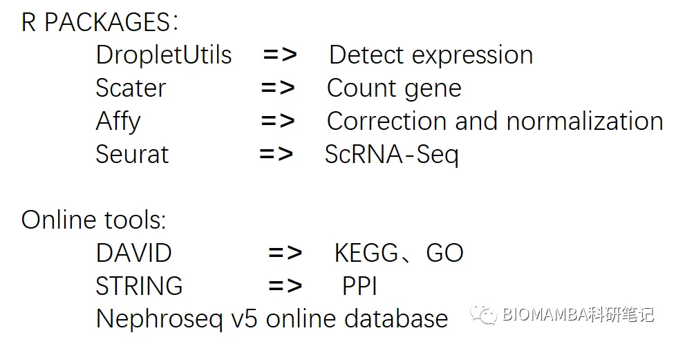
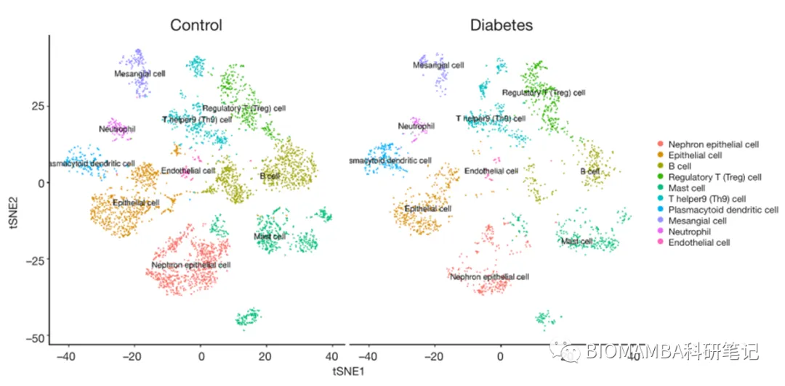
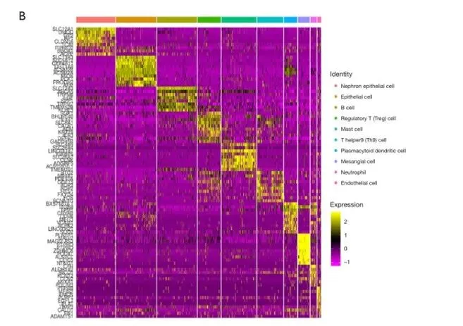
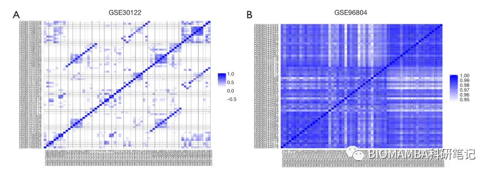
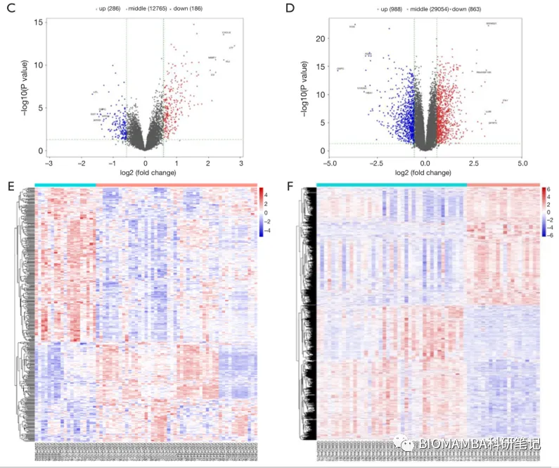
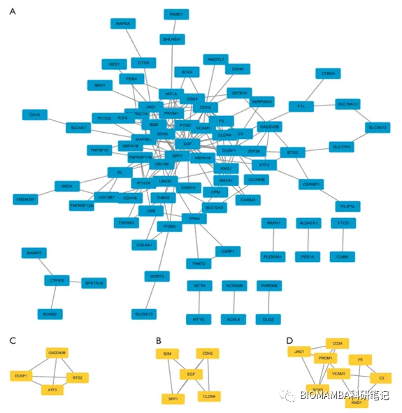
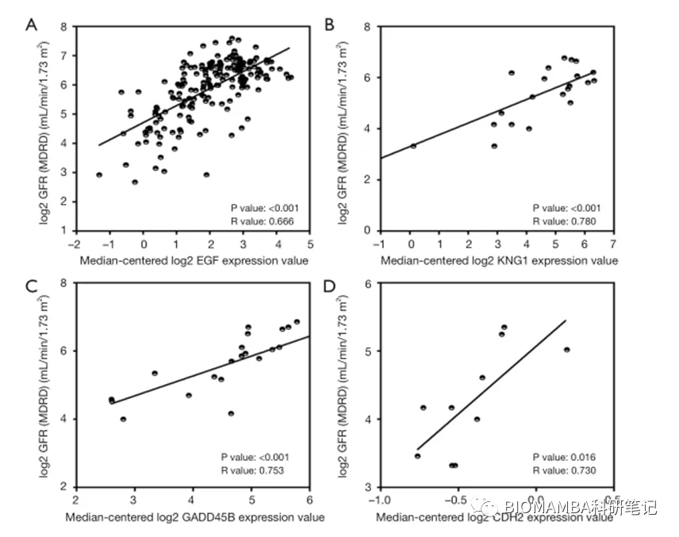

一篇不花钱就能白嫖的文章
原文：https://mp.weixin.qq.com/s?__biz=MzAwMzIzOTk5OQ==&mid=2247497840&idx=2&sn=1dacbfb190e11d2ff104e32f238cf8c4&chksm=9b3c8120ac4b08367bfe3a0dd8d55f21f5d13528826de3144a9a85ce9b1c9f4c710de703edae#rd 合集：单细胞教程全收录 / 文献速递
写在前面
最近有同学发问，有一颗做NGS的心，却没有测NGS的经费，怎么破？恰好读到了这篇文章，我想这就是终极答案 。这篇文章不仅没有花费经济成本，花费的时间成本也十分有限，在这篇文章中并没有做到所谓的大数据分析，用到的样本不过三组GEO数据（GSE131882、GSE30122、GSE30529），共63例DKD肾脏样本与73例健康肾脏样本（来源均为人体），不考虑学习的时间成本，这篇文章两个月内应该足够定稿，但IF=3.69。下图为该文中提到过的所有R包与在线工具及其用途，其中DAVID（Database for Annotation, Visualization and Integrated Discovery）是一个对非代码生信者十分友好的在线工具。
。这篇文章不仅没有花费经济成本，花费的时间成本也十分有限，在这篇文章中并没有做到所谓的大数据分析，用到的样本不过三组GEO数据（GSE131882、GSE30122、GSE30529），共63例DKD肾脏样本与73例健康肾脏样本（来源均为人体），不考虑学习的时间成本，这篇文章两个月内应该足够定稿，但IF=3.69。下图为该文中提到过的所有R包与在线工具及其用途，其中DAVID（Database for Annotation, Visualization and Integrated Discovery）是一个对非代码生信者十分友好的在线工具。

结果图
这篇文章最后的分析结果主要为tSNE、单细胞marker heatmap、相关性热图、差异基因火山图与热图、PPI、基因与临床指征的线性回归分析，这些结果如下图所示。 ● tSNE：

● 单细胞marker heatmap：

● 相关性热图：

● 差异基因火山图与热图：

● PPI：

● 基因与临床指征的线性回归分析：

**总结 **
其实数据挖掘的套路大都是：选取研究疾病模型→搜集文献资料→下载数据→处理数据、完成可视化→撰文投稿。
文献 doi：10.21037/atm-20-5171

如何联系我们
 公众号后台消息更新不及时，超过48h便不允许回复读者消息，这里给大家留一下领取资料、免费服务器的微信号 ，方便各位随时交流、提建议(科研任务繁重，回复不及时请见谅)。此外呼声一直很高的交流群 也建好了，欢迎大家入群讨论：永久免费的千人生信、科研交流群
公众号后台消息更新不及时，超过48h便不允许回复读者消息，这里给大家留一下领取资料、免费服务器的微信号 ，方便各位随时交流、提建议(科研任务繁重，回复不及时请见谅)。此外呼声一直很高的交流群 也建好了，欢迎大家入群讨论：永久免费的千人生信、科研交流群
大家可以阅读完这几篇之后添加给生信入门初学者的小贴士 如何搜索公众号过往发布内容

 您点的每个赞和在看，我都认真当成了喜欢
您点的每个赞和在看，我都认真当成了喜欢